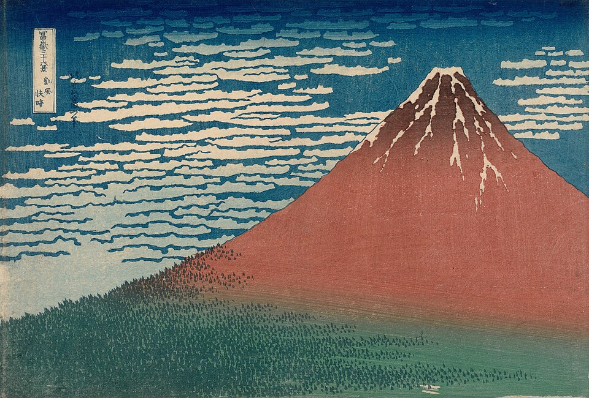
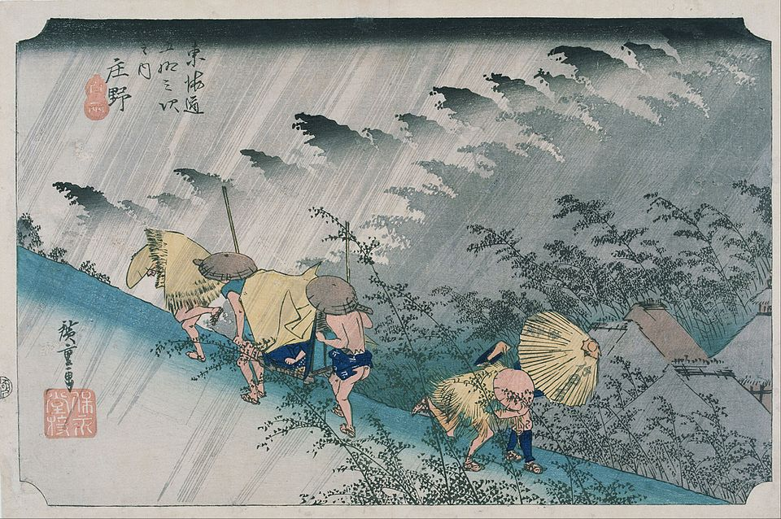
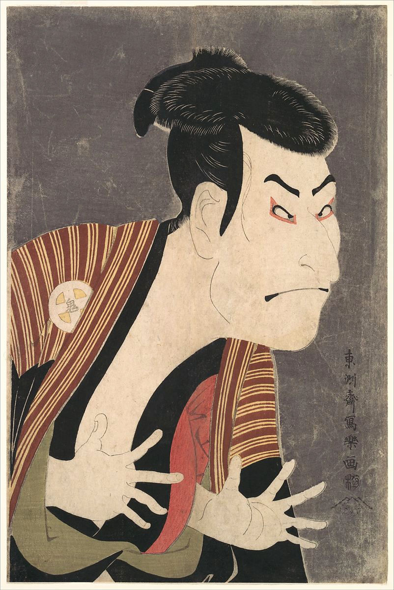
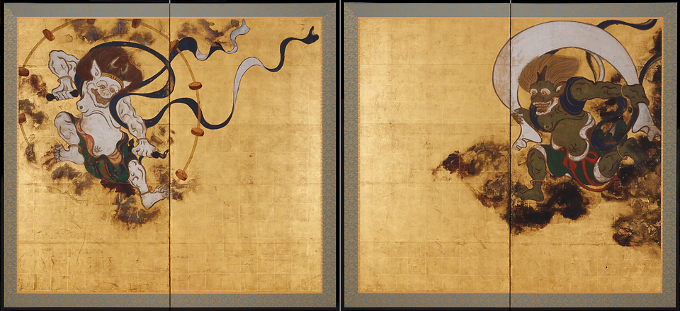
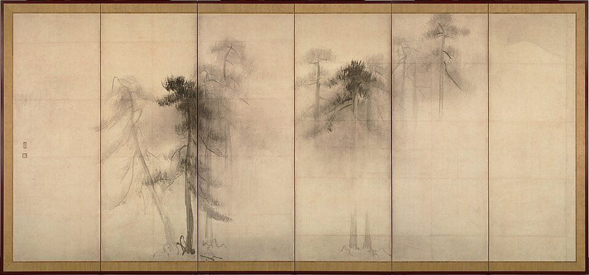
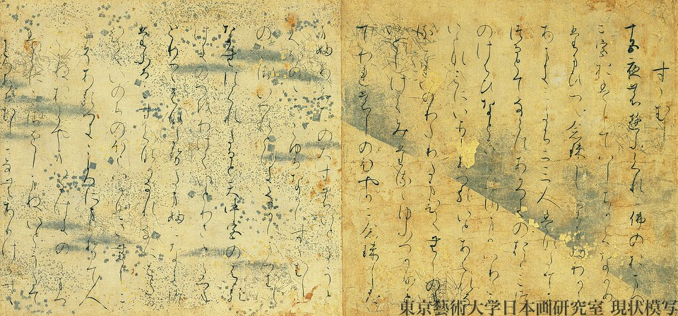
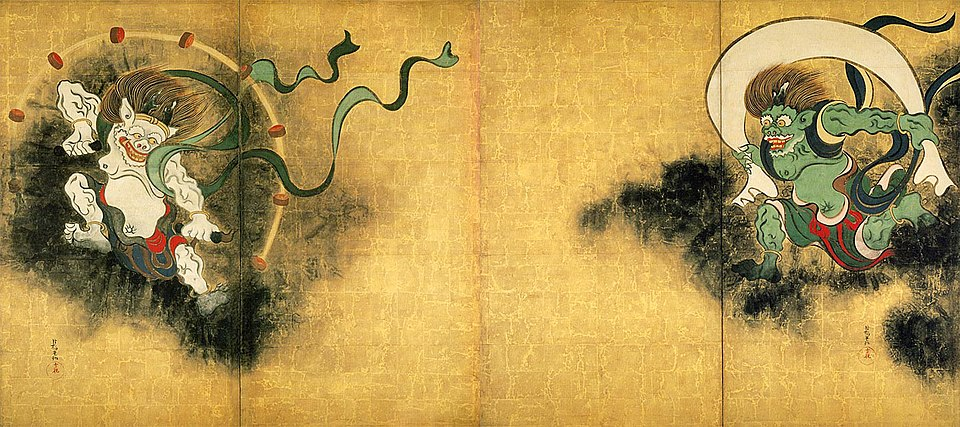
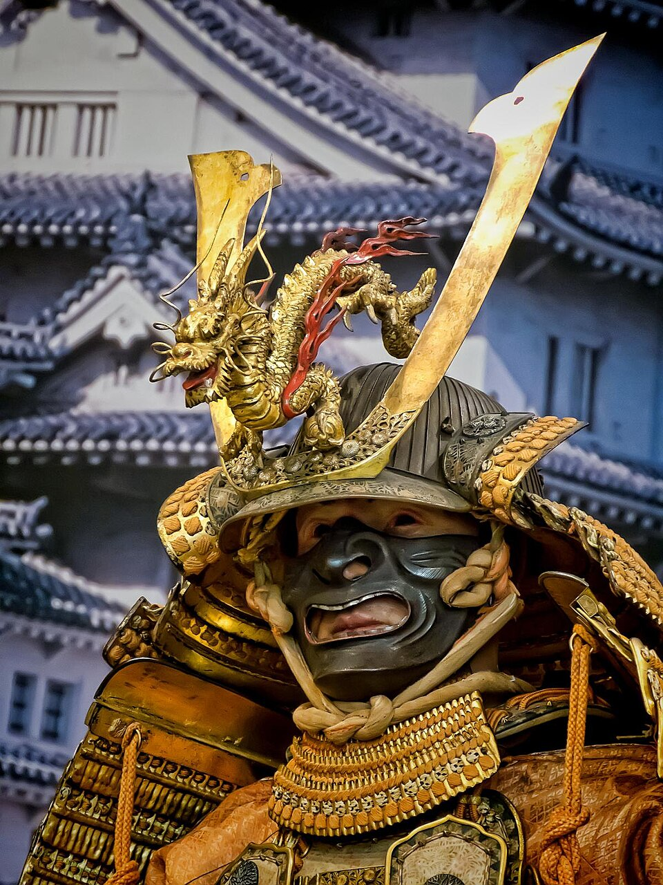
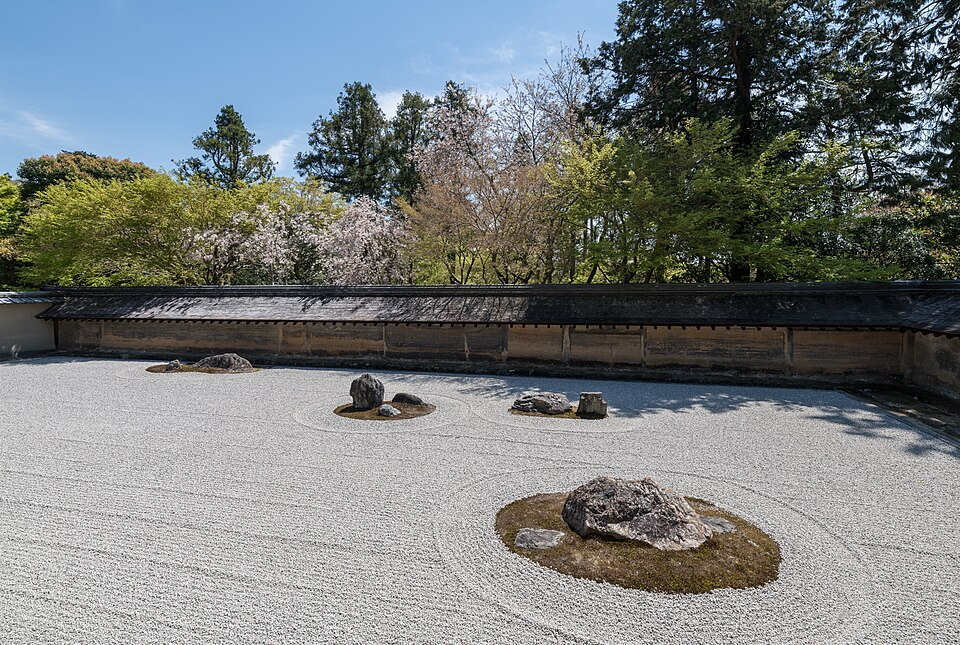

🏆 Meesterwerk: The Great Wave off Kanagawa
Het iconische symbool van Japanse kunst - een gigantische golf dreigt boten te verzwelgen

Katsushika Hokusai, 1831 · Edo Period · Ukiyo-e woodblock print · 26 × 38 cm
🎨 STIJLFIGUREN & THEMA'S
🌊 Ukiyo-e
Drijvende wereld: Houtsneden van het stadsleven. Vergankelijkheid, plezier, schoonheid.
🧘 Zen
Boeddhistische eenvoud: Minimalisme, asymmetrie, leegte (ma), natuurlijke imperfectie.
🌸 Seizoenen
Natuur als gids: Sakura (kersenbloesem), herfstbladeren, sneeuw. Alles is tijdelijk.
🍂 Wabi-sabi
Schoonheid in imperfectie: Eenvoud, veroudering, natuurlijke materialen, rustiek.
🖼️ TOP 10 MEESTERWERKEN
1. The Great Wave off Kanagawa (1831)
Katsushika Hokusai · Edo Period · Ukiyo-e woodblock print · 26 × 38 cm
Achtergrond: Het beroemdste Japanse kunstwerk ter wereld. Onderdeel van de "36 Views of Mount Fuji" serie. Toont vissers in boten die een enorme golf trotseren, met Mount Fuji klein op de achtergrond.
🔍 STIJLANALYSE
Compositie: Dramatische diagonaal van de golf. Fuji klein en stil op de achtergrond - contrast tussen natuurgeweld en eeuwige berg.
Techniek: Ukiyo-e houtsnede. Pruisisch blauw (geïmporteerd uit Duitsland) + traditionele indigo.
Thema: Mens versus natuur. De golf is zowel mooi als dodelijk. Mono no aware - het besef van vergankelijkheid.
2. Red Fuji (1831)
Katsushika Hokusai · Edo Period · Ukiyo-e woodblock print · 26 × 38 cm

Achtergrond: Eveneens uit de "36 Views of Mount Fuji" serie. Toont de berg bij zonsopgang in de late zomer, wanneer de berg rood lijkt.
🔍 STIJLANALYSE
Minimalisme: Alleen de berg, wolken, en lucht. Geen mensen. Zuivere vorm.
Kleur: Warme rode en oranje tinten contrasteren met blauwe wolken. Geometrische eenvoud.
Symbool: Fuji is heilig. De berg vertegenwoordigt eeuwigheid, spiritualiteit, Japan zelf.
3. Rain Shower at Shōno (1834)
Utagawa Hiroshige · Edo Period · Ukiyo-e woodblock print · 35 × 23 cm

Achtergrond: Uit de beroemde "53 Stations of the Tōkaidō" serie. Toont reizigers die plotseling verrast worden door een regenbui.
🔍 STIJLANALYSE
Atmosfeer: Diagonale regenlijnen creëren beweging en urgentie. Reizigers bukken, houden hoeden vast.
Compositie: Diepte door bomen en pad dat wegvoert. Grijs/blauwe tinten voor regenachtige sfeer.
Techniek: Bokashi - graduele inktverloop voor natte effecten. Houtsnede als medium voor atmosfeer.
4. Portrait of Otani Oniji III (1794)
Tōshūsai Sharaku · Edo Period · Ukiyo-e woodblock print · 38 × 25 cm

Achtergrond: Kabuki theater was de populairste vorm van entertainment in Edo Japan. Sharaku schilderde acteurs met ongekende psychologische diepgang.
🔍 STIJLANALYSE
Expressie: Extreem overdreven gelaatstrekken. Felle blik, agressieve houding. De acteur speelt een slechterik (yakko).
Techniek: Yasuri (schrapijzer) textuur voor haar. Witte huid, zwarte baard, rode lippen - dramatisch contrast.
Invloed: Slechts 10 maanden actief, maar revolutionair. Beïnvloedde later Toulouse-Lautrec en Picasso.
5. Wind God and Thunder God (17e eeuw)
Tawaraya Sōtatsu · Edo Period · Byōbu (vouwbaar scherm), inkt en kleur op papier · 170 × 150 cm

Achtergrond: Een van de meest iconische Japanse schilddoeken. Twee goden - Fūjin (wind) en Raijin (donder) - afgebeeld op een gouden achtergrond.
🔍 STIJLANALYSE
Compositie: Twee figuren aan weerszijden van het scherm. Asymmetrische balans. Witte windzak en dondersymbolen.
Techniek: Tarashikomi - nat-in-nat techniek voor organische vormen. Gouden achtergrond (kinpaku) voor goddelijke sfeer.
Mythologie: Shinto-goden die natuurkrachten beheersen. Beschermers van de kosmos.
6. Pine Trees (1595)
Hasegawa Tōhaku · Momoyama Period · Byōbu (zesluik), inkt op papier · 156 × 363 cm

Achtergrond: Een zesluik (zesdelig scherm) dat dennenbomen in mist toont. Beschouwd als een van de belangrijkste Japanse inktschilderijen.
🔍 STIJLANALYSE
Atmosfeer: Mist en leegte (ma) domineren. Bomen verschijnen en verdwijnen. Zen esthetiek.
Techniek: Suibokuga - Chinese inkttraditie maar Japanse verfijning. Variatie in inktintensiteit voor diepte.
Symbool: Den = lang leven, standvastigheid. Winterse naaktakken = veerkracht.
7. Tale of Genji Scroll (12e eeuw)
Anoniem · Heian Period · Emaki (handscroll), kleur op papier · 22 cm hoog

Achtergrond: Illustraties bij 's werelds eerste roman, "Het Verhaal van Genji" (ca. 1000) door Murasaki Shikibu. Toont het hofleven in Heian Japan.
🔍 STIJLANALYSE
Stijl: Yamato-e - typisch Japans, niet Chinees. Felle kleuren, vlakke patronen, gouden wolken.
Techniek: Kirifuri - "weggevallen daken" om interieurs te tonen. Gezichten nauwelijks gedetailleerd.
Verhaal: Scènes uit het leven van prins Genji. Liefde, intrigue, hofetiquette.
8. Fūjin Raijin (18e eeuw)
Ogata Kōrin · Edo Period · Byōbu (tweeluik), inkt en kleur op papier · 165 × 183 cm

Achtergrond: Kōrin's interpretatie van hetzelfde thema als Sōtatsu. De wind- en dondergoden op een effen gouden achtergrond.
🔍 STIJLANALYSE
Vormgeving: Abstracter dan Sōtatsu. Vloeiende lijnen, decoratieve patronen. Rinpa-school esthetiek.
Techniek: Tarashikomi en Tarashikomi-kata - gecontroleerde onregelmatigheden voor textuur.
Erkenning: Kōrin herinterpreteerde klassieke thema's met decoratieve flair. Invloed op Art Nouveau.
9. Samurai Armor (Edo Period, 17e-19e eeuw)
Anoniem · Edo Period · IJzer, leer, lak, zijde, goud · Volledig harnas

Achtergrond: Japanse samurai harnassen waren zowel functioneel als kunstwerken. Elke clan had eigen kleuren en symbolen (mon).
🔍 STIJLANALYSE
Constructie: Duizenden kleine metalen platen (sane) verbonden met zijde. Flexibel, licht, sterk.
Decoratie: Lacquer (urushi) bescherming. Helm (kabuto) met opvallende vormen. Demonische maskers (menpo) om vijanden angst aan te jagen.
Symbool: Bushido - de weg van de krijger. Eer, loyaliteit, discipline. Harnas als verlengstuk van de ziel.
10. Zen Garden Ryoan-ji (15e eeuw)
Anoniem · Muromachi Period · Karesansui (droog landschapstuin) · 30 × 10 meter

Achtergrond: De beroemdste Zen-tuin ter wereld. Vijftien rotsen in een zee van wit grind. Aangelegd bij de Ryoan-ji tempel in Kyoto.
🔍 STIJLANALYSE
Ontwerp: Extreme minimalist. Alleen rotsen, grind, mos. Geen bomen, geen bloemen, geen water.
Compositie: 15 rotsen in 5 groepen. Onmogelijk om alle 15 tegelijk te zien - altijd één verborgen. Pas bij verlichting zie je ze allemaal.
Filosofie: Zen meditatie. Leegte (mu) is essentieel. De tuin is een koan - een raadsel om de geest te openen.
📚 TIJDSGEEST CONTEXT
🌍 POLITIEK PERSPECTIEF
De Japanse kunst leert ons:
- Ukiyo-e: De vergankelijke wereld vastgelegd in houtsneden
- Wabi-sabi: Schoonheid in imperfectie en eenvoud
- Zen: Leegte en stilte als pad naar verlichting
- Natuur: Seizoenen als metafoor voor het leven
- Handwerk: Meesterschap in alle materialen - papier, lak, staal
"De kunst van Japan is niet om de werkelijkheid te kopiëren, maar om de essentie te vatten - één penseelstreek zegt meer dan duizend details." - Zen wijsheid